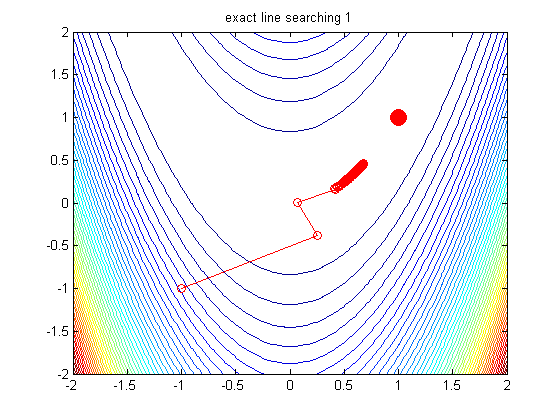

Steepest Descent Demo Rosen
exactLineSearch = true;
f = @(x) rosen2d(x);
[x1,x2] = meshgrid(-2:.05:2);
Z = f([x1(:), x2(:)]);
Z = reshape(Z, size(x1));
figure;
contour(x1,x2,Z,50)
hold on
h=plot(1,1,'ro'); set(h,'markersize',12,'markerfacecolor','r');
if 0
x = [0,0]';
[fx, gx] = aokiFn(x)
d = -gx;
fa = @(a) (aokiFn(x+a*d));
alpha = fminbnd(fa, 0, 1)
[xn,alpha] = linesearchSimple(@aokiFn, x, d, fx, gx)
[xnew,fc,gc] = linesearch(@aokiFn,x,fx,gx,d,0)
end
x0 = [0; 0];
x0 = [-1;-1];
global xhist
xhist = [];
x = steepestDescent(@rosen2d, x0, 'maxIter', 100, ...
'exactLineSearch', exactLineSearch, 'outputFn', @optimstore);
hold on;
plot(xhist(1,:), xhist(2,:), 'ro-');
title(sprintf('exact line searching %d', exactLineSearch))
